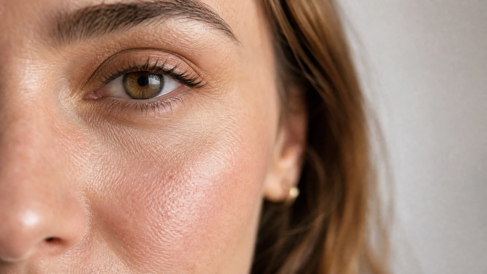

Structure, tone,
and light.
Fine lines, laxity and volume loss — treated in combination, never in isolation.
PRP · Sofwave™ · Morpheus8® · LaseMD Ultra®
Read the face protocol →

01 — FaceFine lines, laxity and volume loss — treated in combination, never in isolation.
Thinning, receding hairlines and early pattern loss — diagnosed first, then treated at the follicle.
 03 — Body
03 — Body
Cellulite, scarring and stretch marks — remodelled with radiofrequency, needling and plasma.
A single draw, spun in-clinic, separated into the platelet-rich fraction that drives every protocol.
Founded as The PRP Lab. The UK's premier clinic built entirely around natural regenerative plasma.
Comprehensive imaging & scalp TrichoComp analysis before treatment.
Plasma layered with radiofrequency, lasers or exosomes for compounding results.
Long-lasting results maintained on a structured annual calendar.
Collagen remodelling for lines, pigmentation, laxity and scarring — addressed at the cellular level, never concealed.
Targeted therapy for thinning, hairline recession & pattern loss. Every protocol starts with diagnostic TrichoComp scalp analysis.
Subdermal radiofrequency & growth factor protocols for skin quality, tightening, scarring & stretch mark reduction.
Concentrated autologous plasma separated in-clinic to stimulate natural cellular regeneration. No synthetics. No fillers. Pure regenerative signals.
Standard blood draw conducted in-clinic by an experienced practitioner.
Formulated as plasma, PRF biofiller or exosome enhancement.
Consultations are booked by our team, not by an algorithm. Tell us what you'd like to address and we'll call you back to arrange a time with the right practitioner.